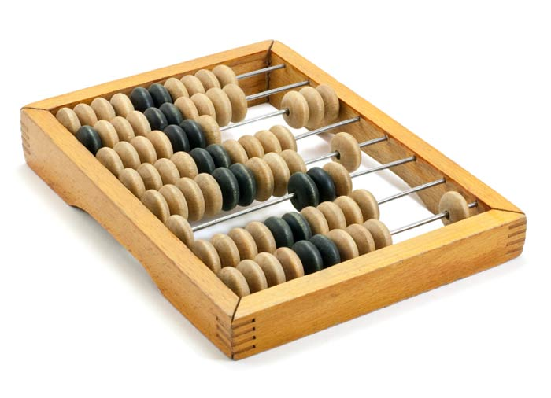
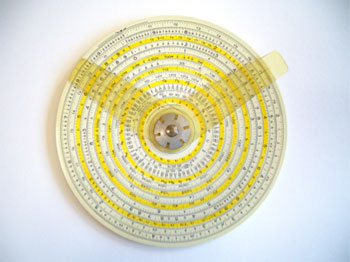
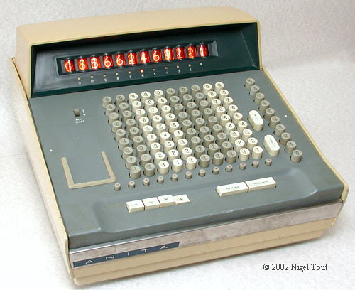
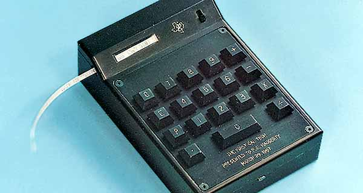

In this project, I am going to be making my own calculator. The calculator will have basic functions as well as functions that aren't so basic. Demonstrating the tools I have learned with HTML as well as Javascript.
But...to fully appreciate the modern day calculators, let's take a journey back to some of the first that led us to where we are today. First off it started with something called an abacus. This was developed by Sumerians and Egyptians around 2000 BC. It worked as such : a frame held a series of rods with ten beads on them. When the beads had slid across the first row, it is time to move to the next row. Indicating the powers of tens (tens, hundreds, etc.).
Next is the slide rule. The slide rule is a sliding stick on disks that uses log scales to allow somebody to do rapid multiplication and division. The time up to the 1980s, it was considered normal to know how to use a slide rule. Even though at this time they had mechanical calculating machines, slide rules were portable while the mechanical calculators were not.
Now coming to a more current way of calculating, a mechanical calculator! Although the first mechanical calculator wasn't created until 1642, it had a very big impact on computing. A very common name in Mathematics, this calculator was created by Blaise Pascal. This calculator brought forth the idea of doing the four basic arithematic operations without having to rely on human intelligence. The way this machine worked was using geared wheels to add and subtract, and would multiply and divide by repetition.
Skipping forward to the mechanical age as I had just mentioned about the modern calculator. With these old style calculators, it is hard to imagine how those will relate to those of today. But let's get to the electronic age of calculator that introduces tube calculators as well as ones using transistors!
Electronic Age: The first device seen in this series had arrived in 1961 and properly naemd ANITA (A New Inspiration To Arithmetic/Accounting). When this was introduced, it was the world's frst all-electronic desktop calculator. These calculators featured a tube made out of specific materials that would allow the 12-place display to light up from the discharging tubes. The early models sold for a merely $1,000 which is equivalent to about $8,000. Making today's graphing calculator seem like nothing in comparison!
The last calculator I will talk about is the Cal Tech which was released in 1967 by Texas Instrument. This was a landmark in the computing era as it could add, multiply, subtract, and divide wile ouptuting the results to a paper tape. All of this...while being compact enough to be held in ones hand!
Now that we have gone through the history of calculator, I am going to introduce my calculator, the HTML calculator! Or something like that..I am still working on the name. But I have used the tools I have learned with HTML and Javascript to create a calculator of my own that will be able to do some basic and some slightly complex functions all from this web page! Enjoy!
| Abacus |  |
| Slide Rule |  |
| ANITA |  |
| Cal Tech |  |